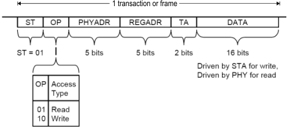

Example: Defining a MDIO protocol
This example demonstrates how to transfer a device independent protocol definition to SmarTest and how to link it to the device dependent details.
Initial details
Device details
It is presumed that the device setup, like pin configuration along with timing and level setup is completed as follows:
- The device's protocol pins MD1a and MD1b are connect to the HW pins 10101 and 10103.
- 10101 gets the pin name pMDclk and 10103 is named pMDdata.
- Both are members of the port poMD.
- Only x1 mode is used for protocol pins.
- Create a multiport burst label "MPB_NonProtPort" that includes all ports/pins except the protocol port poMD.
With this setup ready, the device dependent part has been completed.
Protocol details
The two-wire MDIO protocol, has two signals:
- MDC, which is an alternating signal representing a clock
- MDIO, which consists of write/read transactions of the following format (field order):

The binary values of the OP field shall be coded into symbols for aiding readability.
As the content of PHAYADR, REGADR and DATA may change, parameters have to be used to allow variable values to be used.
Defining device independent protocol definition
- Create a new protocol definition named MDIO.
- Create pin roles MDC and MDIO.
- Create a write transactions with a length of 64 bits.
- Enter parameters as follows:
Parameter name |
Direction |
Length |
|---|---|---|
phyaddr |
in |
5 |
regaddr |
in |
5 |
data |
in or out |
16 |
- Create the pin roles MDC and MDIO.
- For the MDC pin role create a field of 64 bit length. Enter the encode function
repeat("1",64)to let the signal toggling 64 times during the transaction. - Create fields for the MDIO pin role in the order as shown in the table below.
Field |
Encode function |
Remark |
|---|---|---|
PRE |
|
|
ST |
|
|
OP |
WRITE |
This field uses symbols. They can be defined in the symbol section of the field details. Define the following symbols: READ - 0b01 WRITE - 0b10 |
PHYADR |
phyaddr[4..0] |
The field PHYADR uses the parameter phyaddr with bit 4 being the MSB. |
REGADR |
regaddr[4..0] |
The field REGADR uses the parameter regaddr with bit 4 being the MSB. |
TA |
|
|
DATA |
data[15..0] |
The field DATA uses the parameter data with bit 15 being the MSB. |
- Copy the write transaction and paste it as read transaction.Note You have to change the direction of the parameter data in the read transaction to 'out'!
- Enter level and timing segment definitions if applicable. Use pin roles only to keep the protocol definition device independent.
- Enter wavetable details for pin roles only. Map the reserved state character "R" to a single low edge action.
- After saving the MDIO protocol you have completed the device independent part.
Assigning device independent protocol definition to device
- Assign the MDIO protocol to the poMD port.
- Map the port member pMDclk to the pin role MDC and pMDdata to the pin role MDIO.
- After saving the pin configuration you have assigned device independent protocol information to the device resources.
Validate the protocol's definition
Perform the task: Validating a protocol definition.
Advanced information
In order to have SmarTest determine the value of a parameter and to display it in the pattern editor one has to use the decode function.
In this case SmarTest tries to match vectors to transactions and pin roles. This is useful in particular, when modifying parameter values of transactions in the pattern editor or if reading simulated vectors with the objective to display matching transactions.
Enter the following decode functions to the corresponding parameter of your transaction:
Parameter name |
Decode function |
Remark |
|---|---|---|
phyaddr |
@MDIO.@PHYAD[4..0] |
|
regaddr |
@MDIO.@REGAD[4..0] |
|
data |
@MDIO.@DATA[15..0] |
|
Functional changes
- Introduced in SmarTest 7.1.2
- SmarTest 7.1.3: Added validation of protocol definition